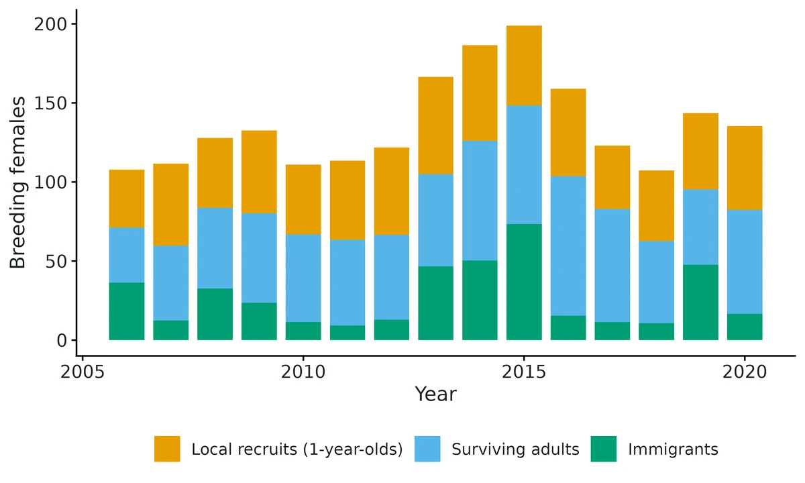
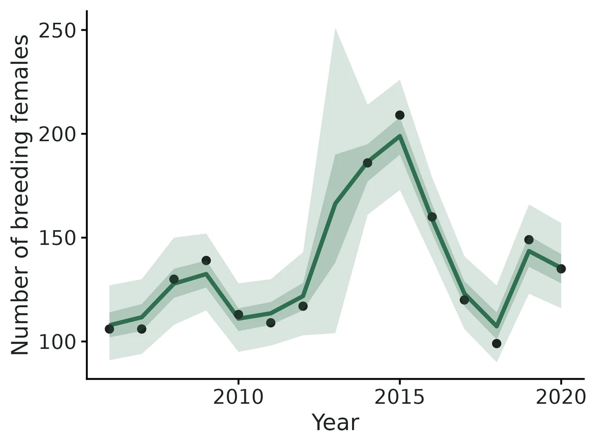
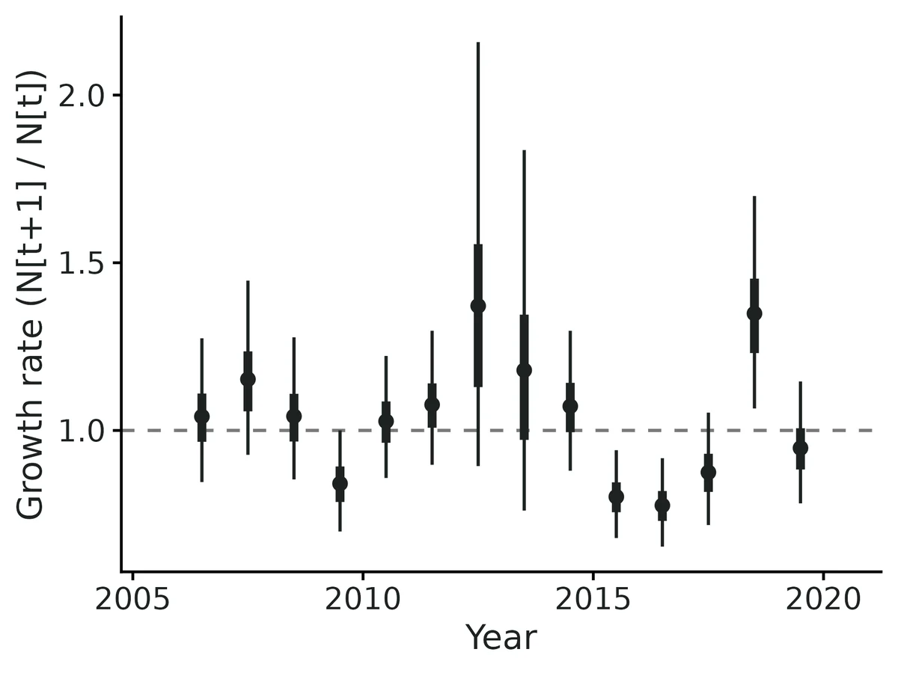
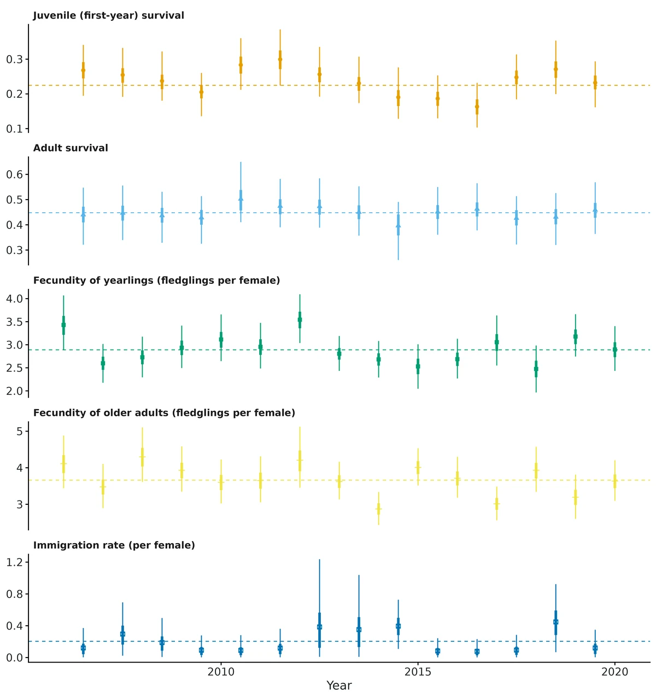

Integrated population model (counts + capture-recapture + productivity)
"Our breeding population went from 106 to 135 females in 15 years with big swings in between. Was that driven by first-year survival, adult survival, breeding success or immigrants? How many breeders are immigrants? Would the population persist without them?" An integrated population model (IPM) answers this by fitting one population model jointly to all the data a long-term study usually has:
Is this the right analysis?
Use it when
A local population studied for several years (>= 8, ideally 12+) with three kinds of data on the same population (annual counts of breeders, capture-recapture or resighting of individually marked young and adults, and brood/litter productivity), and the question is how population size changed, which vital rates drove the changes, how much immigration contributes, or how precise survival estimates can be made by combining the data.
Not for
Only counts (use timeseries), only capture-recapture (cjs / jolly-seber / multistate), only productivity (glm), projecting extinction risk (pva), populations with more than two age classes that differ strongly in vital rates (needs a custom stage structure), species where males and females must both be modelled, density dependence (not in this module).
The data you need
Three CSV files (annual counts; capture histories in long, wide or m-array form with age at marking; productivity per brood or per year with optional mother age) plus an optional year-covariate table.
What the example's main data file looks like:
| year | females_counted |
|---|---|
| 2006 | 106 |
| 2007 | 106 |
| 2008 | 130 |
| 2009 | 139 |
| 2010 | 113 |
Not sure? Use the finder to compare modules.
The worked example
Red-backed shrike population dynamics from counts, ringing and nest monitoring (integrated population model, simulated data with known truth)
The red-backed shrike (Lanius collurio) is a small migratory songbird. It breeds in hedgerows and extensive farmland in Europe and winters in southern Africa. It passes through the Sahel on migration. A research group has followed the shrikes on one study plot for 15 breeding seasons (2006-2020). The analysis is female-based: every number below is about females.
The question: How did the number of breeding female red-backed shrikes on a study plot change over 15 years, which vital rates (first-year survival, adult survival, fecundity, immigration) drove the changes, how many breeders are immigrants, and is first-year survival associated with Sahel rainfall?
The data are simulated, so the true answer is known and the analysis can be checked against it.
What the researcher typed
I have 15 years (2006-2020) of data on red-backed shrikes from my study plot, in four files: shrike_counts.csv (breeding females counted each June; no count in 2013), shrike_captures.csv (every ringed bird each year it was caught, ringed as a nestling or as a breeding female), shrike_broods.csv (fledglings from each monitored nest, with the mother's age, yearling or older) and sahel_rainfall.csv (July-September rainfall in the Sahel each year). I want to know how the number of breeding females changed, which vital rates drove the ups and downs, how many breeders are immigrants, and whether first-year survival is higher after wet years in the Sahel. I only have data on females. Please analyse this and give me a report with figures I can use in a paper.
Run it yourself
Download the example data below and unzip it.
Open the unzipped folder in Claude Code (see Install).
Paste the prompt above. The agent checks the files, writes a plan, runs planted truth, fits the model and writes the report. You can compare your results with the ones below.
Contains shrike_counts.csv, shrike_captures.csv, shrike_broods.csv, sahel_rainfall.csv, the settings file (config.yaml), a description of the data and a step-by-step walkthrough.
Study design details
| n years | 15 |
|---|---|
| years | 2006-2020 |
| n intervals | 14 |
| counts | 14 of 15 years (no survey 2013); 99-209 females |
| nestlings ringed | 50 per year 2006-2019 (700) |
| adults ringed | 20 per year 2006-2019 (280) |
| rings | 980 |
| capture rows | 1309 |
| rings recaptured | 229 |
| nestlings recaptured | 127 |
| nests monitored | 1020 |
| nests yearling mothers | 549 |
| nests older mothers | 471 |
| failed nests | 47 |
| prop broods monitored | 0.5 |
| covariate | sahel_rain_mm on juvenile survival (mean 420, SD 90 mm) |
| count model | poisson |
| engine | nimble; 3 chains x 150,000 iterations, 30,000 burn-in, thin 30 |
Results from the example data

In plain language
- The model estimates 108 (95% CrI 91-127) breeding females in 2006 and 135 (95% CrI 116-157) in 2020 (counts were 106 and 135). Over the 15 years the population changed on average by a factor of 1.016 (95% CrI 1.000-1.033) per year.
- Apparent survival from one breeding season to the next (at average conditions) was 0.22 (95% CrI 0.18-0.27) for first-year birds and 0.45 (95% CrI 0.39-0.50) for adults. 'Apparent' means that animals which emigrate permanently are counted as dead.
- Females breeding for the first time (yearlings, and immigrants) raised 2.89 (95% CrI 2.63-3.17) fledglings per year; older females raised 3.66 (95% CrI 3.32-4.03).
- The estimated immigration rate, averaged over the study years, is 0.20 (95% CrI 0.12-0.30) new female breeders per female already present, i.e. on average 26.8 (95% CrI 15.8-38.1) immigrant breeding females per year, making up 17% (95% CrI 10-25%) of the breeders each year.
- With the estimated survival and fecundity but no immigrants, the population would change by a factor of 0.81 per year (95% CrI 0.72-0.90): the local population behaves as a sink that is maintained by immigration.
- Sahel rainfall (mm, Jul-Sep) was associated with juvenile survival: odds ratio 1.36 (95% CrI 1.02-1.80) per 1 SD (90 mm); P(effect > 0) = 0.98. Across the observed range (307 to 522 mm) expected juvenile survival goes from about 0.17 to 0.29. This is an association across 14 years, not proof of cause.
- The immigration contribution in the LTRE (0.0422, 95% CrI 0.0032-0.1318) and therefore the total explained variance are NOT reliable; treat it as an upper bound. Among the rates with direct data, the largest contribution came from juvenile survival (0.0075, 95% CrI 0.0003-0.0187).
- Compared with separate analyses of the capture-recapture and productivity data, the IPM reduced the posterior SD of juvenile survival by 7% and adult survival by 22%; fecundity and recapture were essentially unchanged.
More figures



Figures are the module's default publication figures, reduced for the web. The report also saves them as PDF and full-resolution PNG.
Planted truth at the example's design
Before trusting the example's results, the module was run on many simulated data sets with the same design and known true values. Each row is one quantity: did the method get it back? (What the thresholds are.)
Every quantity the report interprets passed planted truth at this design. The 6 failing rows in the table are a nuisance or descriptive quantity that the report does not interpret, or reports with a warning; the limits below say which.
| This example | 15 years of counts (one year missing), 50 nestlings + 20 adults ringed per year, about 1,020 nests monitored |
|---|---|
| Design the module was validated at | 15 years, about 100 females, 50 juveniles + 20 adults marked per year, recapture probability 0.6, Poisson counts |
The example matches the validated default design (15 years, 50 juveniles and 20 adults marked per year, recapture 0.6), apart from one missing count year. At that design population size, growth rate, mean survival, fecundity, recapture and the covariate effect all passed. The failures included the year-to-year SDs of adult survival (+18.6%) and immigration (+145%), and the size of the LTRE contributions (immigration +937%). Only the LTRE ranking is supported: the top contributor was correct in 96 of 100 replicates.
These calls sit close to the pass/fail line. With another 96 simulated data sets they could come out the other way, so read them as “about at the limit” rather than as a clear pass or fail. Where the allowance is set by the noise floor, a quantity with a small true value can pass with a larger percentage bias than a quantity that fails. PASS there means the bias could not be told apart from simulation noise, not that the quantity is estimated better.
- adult_survival_sd (✗ FAIL): bias +16.5% against an allowance of ±14.8% (set by the simulation-noise floor (3 Monte Carlo SE)), so it used 111% of the allowance.
- ltre_fecundity_yearling (✓ PASS): bias +34.8% against an allowance of ±38.5% (set by the simulation-noise floor (3 Monte Carlo SE)), so it used 90% of the allowance.
19 of 25 rows pass; 2 are borderline.
Show the full recovery table (25 rows)
| Quantity | True value | Average estimate | Bias | Allowed bias | Coverage (needed) | Result |
|---|---|---|---|---|---|---|
| adult_survival | 0.48 | 0.483 | +0.5% | ±10.0% | 0.97 (0.883) | ✓ PASS |
| adult_survival_sd | 0.2 | 0.233 | +16.5% | ±14.8%† | 0.97 (0.883) | ✗ FAIL ≈ borderline |
| fecundity_adult | 3.6 | 3.62 | +0.6% | ±10.0% | 0.95 (0.883) | ✓ PASS |
| fecundity_adult_sd | 0.15 | 0.154 | +2.8% | ±10.0% | 0.96 (0.883) | ✓ PASS |
| fecundity_yearling | 2.8 | 2.79 | -0.2% | ±10.0% | 0.91 (0.883) | ✓ PASS |
| fecundity_yearling_sd | 0.15 | 0.161 | +7.5% | ±10.8%† | 0.94 (0.883) | ✓ PASS |
| immigrants_mean | 13.3 | 12.4 | -7.1% | ±10.0% | 0.98 (0.883) | ✓ PASS |
| immigration_rate | 0.127 | 0.118 | -7.2% | ±10.3%† | 0.96 (0.883) | ✓ PASS |
| immigration_rate_median | 0.12 | 0.103 | -14.2% | ±11.1%† | 0.97 (0.883) | ✗ FAIL |
| immigration_sd | 0.3 | 0.751 | +150.3% | ±23.1%† | 1 (0.883) | ✗ FAIL |
| juvenile_survival | 0.25 | 0.254 | +1.7% | ±10.0% | 0.98 (0.883) | ✓ PASS |
| juvenile_survival_beta_sahel_rain_mm | 0.4 | 0.398 | -0.5% | ±10.0% | 0.98 (0.883) | ✓ PASS |
| juvenile_survival_sd | 0.3 | 0.307 | +2.3% | ±13.2%† | 0.97 (0.883) | ✓ PASS |
| lambda_geomean | 1.01 | 1.01 | -0.1% | ±10.0% | 0.97 (0.883) | ✓ PASS |
| ltre_adult_survival | 0.0025 | 0.00313 | +25.2% | ±41.0%† | 0.98 (0.883) | ✓ PASS |
| ltre_fecundity_adult | 0.00103 | 0.00092 | -10.9% | ±30.1%† | 0.99 (0.883) | ✓ PASS |
| ltre_fecundity_yearling | 0.000706 | 0.000952 | +34.8% | ±38.5%† | 0.97 (0.883) | ✓ PASS ≈ borderline |
| ltre_immigration | 0.00159 | 0.00732 | +359.5% | ±117.8%† | 0.94 (0.883) | ✗ FAIL |
| ltre_juvenile_survival | 0.0213 | 0.0231 | +8.7% | ±13.8%† | 0.95 (0.883) | ✓ PASS |
| ltre_population_structure | 0.0001 | 0.000264 | +319.0% | ±177.4%† | 0.98 (0.883) | ✗ FAIL |
| N_final | 112.6 | 114.1 | +1.3% | ±10.0% | 0.98 (0.883) | ✓ PASS |
| N_first | 89.8 | 92.6 | +3.1% | ±10.0% | 0.98 (0.883) | ✓ PASS |
| N_mean | 105.2 | 105.3 | +0.1% | ±10.0% | 0.94 (0.883) | ✓ PASS |
| recapture_prob | 0.6 | 0.596 | -0.6% | ±10.0% | 0.94 (0.883) | ✓ PASS |
| var_lambda_explained | 0.0272 | 0.0357 | +31.4% | ±13.5%† | 0.95 (0.883) | ✗ FAIL |
Limits that matter
- LTRE immigration contribution is overestimated severalfold (+927% at this design); in this example the fitted LTRE ranks immigration first although the true top contributor is juvenile survival. Only the ranking among rates with direct data is supported (96/96 replicates).
- LTRE sizes are biased upward (total explained variance +39%); interpret ranking only.
- Temporal SDs are descriptive only with 15 years (adult survival SD +17%, immigration SD +150%, prior-driven).
- Immigration is the least certain estimate: unbiased at ~12% immigration (-7% here) but ~+19% upward at ~8%; it absorbs count bias, emigration and marker loss.
- Omitting immigration in an open population biases juvenile survival up ~19% (negative control, coverage 0.53).
- Survival is apparent (emigration = death); first-year survival is local recruitment.
- Assumptions: unbiased counts of breeding females, one recapture probability for both age classes, immigrants breed like yearlings, no density dependence, independent data sets.
- The first-year population size follows the first count (here 108 vs true 86 after a high count of 106); in simulation N_first is unbiased (+3%).
- Rainfall effect is an association over 14 winters; power 0.875 for +0.4 logit per SD at this design.
- The HTML report embeds figures in the module's default layout; the exported PNG/PDF figures carry the config fixes.
All known limits from the module's validation record
- Temporal SDs (
*_sd) are biased upward with 15 or fewer years (adult_survival_sd +19% in the IPM, +31% in the separate analysis; +59% at the 12-year independent design). They are descriptive only. - Immigration. immigration_sd is essentially prior-driven (+145% to +293%). The study-period immigration_rate passes at about 12% immigration, but at low immigration (about 8%, independent design below) it is biased upward by +19% (immigrants_mean +14%), with good coverage (0.98-0.99). The skew comes from the overestimated SD. Treat low immigration estimates as upper values. immigration_rate_median is not interpreted.
- LTRE contributions: absolute sizes are biased upward (the posterior variance of the annual rates adds to their temporal variance), and the immigration contribution is overestimated severalfold (+937% to +2565%; Paquet et al. 2021). Only the ranking is supported: the top contributor was correct in 96% of replicates (default), 92% (independent design) and 77% (6 years).
- Short series (< ~8 years): report N and mean rates only.
- Model assumptions: one recapture probability for both age classes (the book's hoopoe model has a separate pj), immigrants breed like yearlings, no density dependence, independent data sets.
How this module was validated
- 100 simulated datasets per design, fitted with Nimble (3 chains x 35,000 iterations, 5,000 burn-in, thin 6). To pass, bias had to be within 10% (or 3 Monte Carlo SE) and coverage (how often the 95% interval contained the truth) at least about 0.884. 97 of 100 default fits converged.
- Harder designs: with a 6-year series every temporal SD failed (+38% to +293%) and power for the covariate fell to 0.07. With sparse marking (20 juveniles and 8 adults per year), mean rates still passed and covariate power was 0.70.
- The combined model gave narrower intervals than separate analyses of the same data for survival (width ratio 0.79-0.94), but not for fecundity.
- Negative control: leaving immigration out of the model biased juvenile survival by +18.7% (coverage 0.53). The false-positive rate for the covariate with no true effect was 0.031.
- Cross-checks: an independent book-style JAGS version agreed within 0.05 posterior SD. The survival component agreed with marked (maximum likelihood) within 0.03-0.11 SE.
- Power for a -0.4 covariate effect was 0.67, 0.88 and 0.82 with 15, 30 and 60 juveniles marked per year.
- Separate verifier agents ran two independent simulators. On a 12-year design with low immigration (about 8%), immigration was +18.8% (fail). On an 18-year design the survival and fecundity SDs were recovered without bias. False-positive rates were 0.03, and the negative controls failed as they should.
Every run uses the acceptance gate described on the validation page. The full record follows, section by section, exactly as kept in the module's VALIDATION.md.
Settings and pass/fail rule used for every run
Gate (core/R/recovery.R, unchanged): |bias| <= max(10% of truth, 3 MC SE); 95% coverage >= 0.95 - 3 MC SE (about 0.884 at nsim = 100); >= 90% of replicates converged (R-hat < 1.05 under the recovery settings fast_settings: 3 chains x 35,000 iterations, 5,000 burn-in, thin 6). Full tables (every estimand: truth, mean, bias, MC SE, RMSE, coverage, CI width, power) were produced by dev/ipm/summarise_validation.R and are in dev/ipm/verify/validation_tables_verified.md. Reps and summaries are in results/ipm/recover_<design>/ and results/ipm/verify/<run>/.
Verdict: VERIFIED WITH LIMITS. Population size, growth rate, mean survival, fecundity, recapture and the covariate effect pass at both the default design and an independent design. The temporal SDs, the LTRE contribution sizes and immigration (at low immigration) do not pass and are documented limits below.
1. Default design (15 years, ~100 females, 50 juveniles + 20 adults marked per year, p = 0.6, Poisson counts)
core/run.R recover ipm --nsim 100 --cores 16 --out results/ipm/recover_default (rerun 2026-10-20 with the current estimand definitions). 97/100 converged, 0 errors, median 558 s per replicate.
| estimand | truth | rel. bias | coverage | gate |
|---|---|---|---|---|
| juvenile_survival | 0.25 | +1.6% | 0.97 | PASS |
| adult_survival | 0.48 | +0.1% | 0.95 | PASS |
| fecundity_yearling | 2.8 | +0.0% | 0.92 | PASS |
| fecundity_adult | 3.6 | +0.6% | 0.95 | PASS |
| recapture_prob | 0.6 | -0.8% | 0.96 | PASS |
| juvenile_survival_beta_winter_severity | -0.4 | -5.1% | 0.97 | PASS (power 0.80) |
| juvenile_survival_sd | 0.3 | +7.6% | 0.99 | PASS |
| fecundity_yearling_sd / fecundity_adult_sd | 0.15 | +6.2% / +3.0% | 0.98 / 0.98 | PASS |
| adult_survival_sd | 0.2 | +18.6% | 0.99 | FAIL (bias) |
| immigration_rate (study-period mean of the annual rates) | 0.127 (realised) | -5.3% | 0.93 | PASS |
| immigration_rate_median (exp(mu); not interpreted) | 0.12 | -12.3% | 0.93 | FAIL (bias) |
| immigration_sd | 0.3 | +145% | 1.00 | FAIL (bias) |
| immigrants_mean | 14.2 | -6.9% | 0.91 | PASS |
| N_first / N_final / N_mean | +3.0% / +0.2% / +0.5% | 0.97 / 0.96 / 0.94 | PASS | |
| lambda_geomean | 1.011 | -0.2% | 0.97 | PASS |
| ltre_juvenile_survival | 0.0221 | +25.4% | 0.93 | FAIL (bias) |
| ltre_immigration | 0.0012 | +937% | 0.93 | FAIL (bias) |
| var_lambda_explained | 0.0282 | +51.8% | 0.91 | FAIL (bias) |
| ltre_adult_survival, ltre_fecundity_*, ltre_population_structure | small | +50% to +425% | 0.93-0.98 | PASS only because 3 MC SE > 10% of a tiny truth |
LTRE ranking: the largest true contributor (juvenile survival in all 100 replicates) was ranked first in 96/100 fits; the 4 misses ranked immigration first.
2. Harder designs
Short series (6 years), nsim = 100, 100/100 converged. Mean rates, recapture, beta (-6.2%, but power only 0.07), N and lambda pass. Every temporal SD fails (+38% to +293%), as do immigration_rate_median (+56%) and all large LTRE terms. immigration_rate passes (+12.6%, within 3 MC SE). The LTRE top contributor is right in 77/100 (97/100 if immigration is excluded).
Sparse capture-recapture (20 juveniles + 8 adults marked per year), nsim = 100, 97/100 converged. Mean rates, N, lambda and immigration_rate (-10.0%, coverage 1.00) pass; power for beta drops to 0.70. adult_survival_sd fails (+51%).
3. IPM vs separate analyses (same simulated data sets, same seeds)
Separate = the same CJS m-array + productivity models without counts (components: separate). Ratio of mean 95% interval widths, IPM / separate:
| estimand | default design | sparse capture-recapture |
|---|---|---|
| juvenile_survival | 0.92 | 0.79 |
| adult_survival | 0.94 | 0.87 |
| juvenile_survival_beta | 0.87 | 0.71 |
| juvenile_survival_sd | 0.86 | 0.70 |
| fecundities | 1.00-1.01 | 1.00-1.01 |
| recapture_prob | 0.98 | 0.95 |
RMSE is lower in the IPM in each case (juvenile survival 0.027 vs 0.029, and 0.030 vs 0.038 with sparse marking). Coverage is similar. As expected, the gain is largest for the rates with the weakest direct data and is zero for fecundity, which the productivity data already pin down.
4. Controls
- Negative control (data with immigration of 0.12, fitted without immigration), nsim = 100: juvenile_survival +18.7% (coverage 0.53), adult_survival +4.8% (coverage 0.88), recapture_prob -7.0% (coverage 0.71). Gate FAILS as intended. Fecundity is not biased (+0.8%, +1.4%): the productivity data hold it in place.
- False-positive rate (beta = 0), nsim = 100: 3/98 = 0.031.
- Power over
marked_juveniles15 / 30 / 60 (nsim = 50): 0.67 / 0.88 / 0.82 for beta = -0.4 (results/ipm/power). The dip at 60 is within MC error (SE about 0.055).
5. Independent routes
- Full IPM in JAGS (book-style code,
dev/ipm/crosscheck.R) vs Nimble on the example data: every posterior mean agrees within 0.05 posterior SD; SD ratios 0.97-1.07. Inresults/ipm/crosscheck/ipm_nimble_vs_jags.csvthe rowimmigration_rateis the median, exp(mu) (the file predates the change of estimand). - CJS component vs
marked(maximum likelihood, individual histories): differences of 0.03-0.11 SE for juvenile survival, adult survival and recapture. The customdMarrlog-likelihood equalsdmultinomto 2e-13.
6. Example data
Default settings converge (max R-hat 1.004, min bulk ESS 630 over all reported quantities). The posterior predictive p-values are 0.56 (counts), 0.46 (productivity) and 0.37 (capture-recapture). The truth lies inside the 95% CrI for every mean rate, beta, immigration_rate (0.20, CrI 0.12-0.30, truth 0.127), immigrants_mean and N_final. N_first (108, CrI 91-127, truth 86) is outside: the first count was 106 for 86 true females. In this data set the LTRE puts immigration first (0.042), while the truth has juvenile survival first (0.019 vs immigration 3e-5). This is the documented overestimation of the immigration contribution, and the report says so.
Independent verification (2026-10-20, separate agent)
Literature and code. I checked the process model, priors, m-array cell probabilities and LTRE line by line against the book code: Schaub & Kéry (2022), IPM_09/IPM_09.2.R (hoopoe IPM) and IPM_09.4.R (fixed-design and transient LTRE). The code is in dev/ipm/ref/IPM_code-main.
N1[t+1] ~ Pois(rho phij (f1 (N1+N3) + f2 N2)),N2 ~ Bin(Ntot, phia)andN3 ~ Pois(omega Ntot)are identical to the book with rho = 0.5.- The priors match (U(0,1) for means and p, U(0,3) for SDs and mean omega). The fecundity bound is U(0,20) here vs U(0,10) in the book.
dMarrcell probabilities equal the book'spr.j/pr.awhen pj = p.- The lambda expression, sensitivities at hyper-means and mean stage proportions, and
rowSums(V * outer(s, s))are the book's 9.4 code. - The transient LTRE uses stage proportions, where the book code differences absolute N. Proportions are the consistent choice (Koons et al. 2016).
- The truth for the LTRE comes from
ipm_ltre_draws, the same function as the estimate (shared code). I recomputed it with analytic sensitivities in my own simulator, and the two agree to machine precision on three data sets. - Paquet et al. (2021, MEE 12: 1899-1910) citation confirmed.
Independent planted truth (dev/ipm/verify/vsim.R, vrun.R, written without module code). My simulator writes raw researcher CSVs, so read_data, m-array construction and covariate standardisation are exercised:
- a long capture file with age codes
pullus/ad; - per-nest productivity with mother age
first-time/older; - non-default column names;
- the covariate in original units (°C).
The design and parameters differ from the defaults:
- 12 years, about 80 females, 40 juveniles + 25 adults marked per year, 60% of broods monitored;
- phij 0.30, phia 0.55, f 2.2/3.0, p 0.5, median omega 0.08;
- SDs 0.25/0.15/0.12/0.12/0.25, beta 0.5 per SD.
Recruits are drawn per female, thinned by sex and survival. nsim = 100, 99/100 converged, 0 errors. Results are in results/ipm/verify/main.
| estimand | rel. bias | coverage | gate |
|---|---|---|---|
| juvenile_survival | -1.2% | 0.97 | PASS |
| adult_survival | -0.1% | 0.96 | PASS |
| fecundity_yearling / adult | -0.5% / -0.1% | 0.96 / 0.97 | PASS |
| recapture_prob | +1.0% | 0.95 | PASS |
| juvenile_survival_beta_temp_C | +7.6% | 1.00 | PASS (power 0.90) |
| N_first / N_final / N_mean | +2.5% / +0.4% / +0.5% | 0.92 / 0.97 / 0.95 | PASS |
| lambda_geomean | -0.1% | 0.95 | PASS |
| immigration_rate_median | +6.3% | 1.00 | PASS |
| immigration_rate (study mean) | +18.8% | 0.98 | FAIL (bias) |
| immigrants_mean | +14.1% | 0.99 | FAIL (bias) |
| immigration_sd | +258% | 0.98 | FAIL |
| juvenile_survival_sd / adult_survival_sd | +36% / +59% | 0.98 / 0.99 | FAIL |
| ltre_juvenile_survival / ltre_immigration / var_lambda_explained | +26% / +2565% / +61% | 0.94-0.97 | FAIL |
LTRE top contributor correct in 92% of replicates (99% excluding immigration).
- Null effect (beta = 0), independent design: false-positive rate 3/99 = 0.030 (
results/ipm/verify/null). In that run immigration_rate was +5.6% (PASS), so the immigration bias varies between replicate sets. - Negative control, independent design (immigration fitted out), nsim = 48: juvenile_survival +11.7% FAIL (bias, just above the 10% bound; coverage 0.92), adult_survival +3.5%. The gate fails, but only barely, because immigration is low (8%) in this design; at 12% immigration the failure is clear (+18.7%, coverage 0.53).
- Builder's recovery reruns (default, short, sparse_cr, null_effect) checked: the numbers above were regenerated from those runs, and every claim in the builder's summary was confirmed. The run with the new immigration_rate estimand passes at the default design (-5.3%).
- Usability. I ran a messy copy of the example data (
dev/ipm/verify/messy) with a wrong count column name, an NA count, an NA fledgling number, a misspelled ring (AF7339l), age codesjuv.andfledgeling, and a misspelled covariate name. The wide capture format gives the same m-arrays as the long format.
Changes made in this verification (io.R, report.R; the model, simulate and fit are unchanged, so no recovery result is affected):
- A missing-column error now names the real config key (e.g.
count_col:); it used to suggest a non-existentcounts_*_col. - Age codes with trailing dots (
juv.) are recognised. Unrecognised age codes are listed by value and id in the data notes (they used to be counted only). - Broods with an empty fledgling number are reported (they used to be dropped silently), with advice to enter 0 for failed broods.
- Ring ids with an unusual letter/digit format are flagged with the closest common id (
'AF7339l' (close to 'AF73391')). There are no false alarms on the example or simulated data. - A misspelled covariate name now lists the available covariate columns.
- Interpretation: the caveat said omitting immigration biases "juvenile survival and fecundity". Simulation shows juvenile and adult survival, not fecundity, so I corrected it. I added a caution that low immigration estimates are biased upward. Covariate sentences use the config figure label (e.g. "Sahel rainfall (mm, Jul-Sep)"), and missing first/last counts print as "not taken" instead of "NA".
- Figures: the immigration-covariate effect plot looked up a non-existent annual column (
immigration_rate_median[year]), so its annual points were missing. It now usesimmigration_rate[year].
Independent verification, round 2 (2026-10-20, separate agent)
This round continued the interrupted second pass. It reused its finished SLURM runs (results/ipm/verify2/) after checking them, and applied the fixes that pass had drafted but never applied.
Second independent simulator (dev/ipm/verify/v2/sim2.R, no module code):
- individual-based: per-female Poisson fledglings, Binomial sex, per-bird survival and recapture;
- 18 years, about 150 females, 45 juveniles + 25 adults marked per year, p = 0.7;
- phij 0.30, phia 0.50, f 2.2/2.8, median omega 0.15;
- normal count error (SD 8) with one missing count year;
- wide capture format and aggregated productivity;
- the covariate (snow days, raw units) acts on adult survival (beta 0.3 per SD);
- the LTRE truth uses hand-derived sensitivities.
nsim = 100 per run, fitted with fast_settings through read_data() → check_data() → fit().
| run | converged | result |
|---|---|---|
| main (beta 0.3) | 97/100 | PASS: all mean rates (bias <= 2%, coverage 0.93-0.98), all temporal SDs except immigration_sd (-3% to +8%), beta (+2.3%, power 0.89), immigration_rate (-4.4%), immigration_rate_median (-7.1%), immigrants_mean (-5.6%), N_first/N_final/N_mean, lambda_geomean, ltre_adult_survival, ltre_juvenile_survival. FAIL: immigration_sd +81%, count_sd +12% (coverage 1.00), ltre_immigration +495%, var_lambda_explained +19%, ltre_fecundity_yearling (tiny truth) |
| null (beta 0) | 92/100 | false-positive rate for the covariate 3/92 = 0.03; the other estimands are as in main |
| negative control (immigration present, fitted without it) | 99/100 | gate FAILS as intended: juvenile_survival +23.8%, coverage 0.14; adult_survival +6.4%, coverage 0.76; recapture_prob -6.4%, coverage 0.58; fecundity unbiased |
- LTRE top vital-rate contributor correct in 73% (main) and 57% (null) of replicates. It is lower here than at the default design because the true top two contributors were within a factor of 2 of each other in about 60% of replicates (correct 72% then, 86% when the factor is >= 2). The ranking is reliable only when one rate clearly dominates.
- With 18 years and normal counts, the temporal SDs of survival and fecundity were recovered without bias. Their upward bias is a short-series effect (<= 15 years).
- Builder's default recovery rerun (
results/ipm/verify2/rerun_default, same seeds): the estimates are identical to the builder's run (max |difference| = 0), so every number in section 1 is reproduced.
Changes in round 2 (io.R, report.R, README; model, simulate and fit unchanged, so no recovery result is affected; backups are in dev/ipm/verify/module_backup_v2/):
- A count file with two rows for the same year now stops with both values and advice. Before, it was accepted silently.
- A mistyped year (e.g. 2106 in the capture file) now stops, naming the file and the year. Before, it silently stretched the study to 101 years.
- Broods with an unrecognised mother age (e.g.
3yr) are now reported. Before, they were dropped from the productivity data without a note. - Report: covariate sentences give the size of 1 SD in the covariate's own units. The transient-LTRE components are ordered (and coloured) like the vital-rate series.
- README: count_sd is documented as a biased nuisance parameter.
Messy-data test (dev/ipm/verify/v2/messy_test2.R, output messy_test2.out): each of the three problems above, plus a misspelled age (juvenille), a misread ring (NX5607l) and an empty fledgling number, gives a specific, actionable message. The clean example gives none.
Example refit with the patched module (core/run.R fit ipm --config modules/ipm/example/config.yaml --out results/ipm/verify3_example) gave the same estimates as section 6 (max R-hat 1.002). I checked every report sentence against ipm_estimates.csv, e.g. odds ratio exp(0.305) = 1.36 (1.02-1.80), survival 0.17-0.29 over 307-522 mm, and 26.8 immigrants per year = 17% of breeders. Survival is called "apparent" and the covariate an "association". All 11 figures listed in the README (with one effect plot for the one covariate) are present; the effect and transient-LTRE PNGs were inspected visually.
Round-2 verdict: VERIFIED WITH LIMITS (unchanged limits: temporal SDs at <= 15 years, immigration SD and low-immigration bias, LTRE sizes and the immigration contribution, count_sd).
Engine, references and full details
Engine: nimble (MCMC); cross-checked against the same model in JAGS (book code) and marked (CJS maximum likelihood).
References
- Besbeas P, Freeman SN, Morgan BJT, Catchpole EA (2002) Integrating mark-recapture-recovery and census data to estimate animal abundance and demographic parameters. Biometrics 58: 540-547.
- Abadi F, Gimenez O, Ullrich B, Arlettaz R, Schaub M (2010) Estimation of immigration rate using integrated population models. Journal of Applied Ecology 47: 393-400.
- Abadi F, Gimenez O, Arlettaz R, Schaub M (2010b) An assessment of integrated population models: bias, accuracy, and violation of the assumption of independence. Ecology 91: 7-14.
- Schaub M, Abadi F (2011) Integrated population models: a novel analysis framework for deeper insights into population dynamics. Journal of Ornithology 152 (Suppl 1): S227-S237.
- Schaub M, Fletcher D (2015) Estimating immigration using a Bayesian integrated population model: choice of parametrization and priors. Environmental and Ecological Statistics 22: 535-549.
- Schaub M, Kéry M (2022) Integrated Population Models: Theory and Ecological Applications with R and JAGS. Academic Press. Code: github.com/mikemeredith/IPM_code; R package IPMbook.
- Koons DN, Iles DT, Schaub M, Caswell H (2016) A life history perspective on the demographic drivers of structured population dynamics in changing environments. Ecology Letters 19: 1023-1031.
- Koons DN, Arnold TW, Schaub M (2017) Understanding the demographic drivers of realized population growth rates. Ecological Applications 27: 2102-2115.
- Paquet M, Knape J, Arlt D, et al. (2021) Integrated population models poorly estimate the demographic contribution of immigration. Methods in Ecology and Evolution 12: 1899-1910. doi:10.1111/2041-210X.13667
- Riecke TV, Williams PJ, Behnke TL, Gibson D, Leach AG, Sedinger BS, Street PA, Sedinger JS (2019) Integrated population models: model assumptions and inference. Methods in Ecology and Evolution 10 (2019). (Marker effects and mortality heterogeneity bias supplemental parameters such as immigration and fecundity.)
- Burnham KP et al. (1987) Design and analysis methods for fish survival experiments based on release-recapture. AFS Monograph 5.
- de Valpine P et al. (2017) Programming with models: writing statistical algorithms for general model structures with NIMBLE. JCGS 26: 403-413.